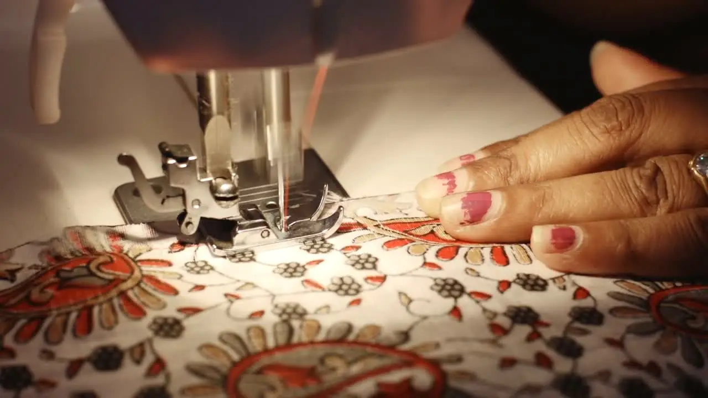

Capabilities
A 200,000 sq. ft. floor, arranged for garments that need handwork.
Most of what a buyer needs to know about a factory is the machine list, who controls the value-added processes, and what happens when a fit comment comes back. Here is all three.
Machinery
Sewing capacity, itemised.

Process
From tech pack to container.
Each stage has a named owner on our side. You are not passed between departments, and you are told early when something will not work.
Enquiry & costing
Send a tech pack, sketch or reference garment with target quantities. We come back with a costing, fabric options and an honest view of whether the construction suits our floor.
Sampling
Pattern is drafted in CAD; a proto or fit sample follows. Embroidery and print strike-offs are developed alongside so approvals do not stack up at the end.
Fit & approval
Comments are worked into a revised pattern. Because grading and markers are digital, revisions are quick and the bulk marker matches the sample you signed.
Bulk production
Fabric in-house, cutting, line loading and sewing with inline checks. Handwork runs parallel to the sewing lines rather than after them.
Finishing & QA
Pressing, trims, measurement checks and a final AQL inspection before packing. Third-party inspections are accommodated on request.
Packing & export
Cartoning to your pack plan, export documentation and logistics coordination from Jaipur to your nominated forwarder.
Materials
Fabrics we work with every day.
Our strength is light-to-mid weight wovens with decoration. If your programme sits outside that, we will say so rather than learn on your order.
Wovens
Cotton lawn, voile, poplin, dobby and slub; rayon and viscose including georgette and crepe; yarn-dyed stripes and checks; blended and printed bases.
Decoration
Machine embroidery, placement and all-over prints, pintucks, gathers, tiering, lace and trim insertion, tassels and hand-finished detailing.
Categories
Dresses, maxi and midi; tunics and kaftans; blouses and shirts; co-ord sets; jumpsuits; resort and vacation wear.
Sustainable options
Better Cotton sourcing available on request as a member of the Better Cotton Initiative, alongside recycled and organic-certified bases through our supply base.
Start a programme
Send us a tech pack. We will come back with a costing and a sampling plan.
Tell us your category, quantities and delivery window, and we will come back with a costing, a sampling plan, and an honest view of whether we are the right factory for it.